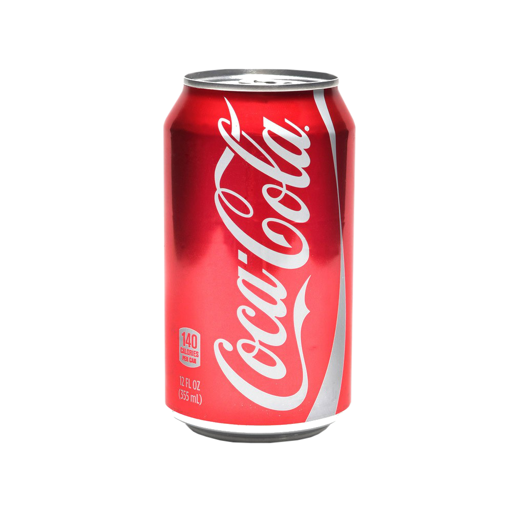

Coca-cola Zero

A Coca-Cola Zero é uma versão do clássico refrigerante, sem açúcar e com poucas calorias. Oferece o mesmo sabor característico, mas utiliza adoçantes artificiais como aspartame e acessulfame-K. É ideal para quem busca reduzir o consumo de açúcar sem abrir mão da refrescância.
Coca-cola Normal

A Coca-Cola lata normal é um refrigerante clássico, conhecido por seu sabor doce e refrescante, à base de cafeína e gás. Feita com açúcar ou xarope de milho, é um dos produtos mais icônicos do mundo, amplamente consumido em diversas ocasiões. Cada lata contém 350 ml, oferecendo energia rápida e sensação de prazer
A Coca-Cola é uma das bebidas mais famosas do mundo, lançada em 1886. É um refrigerante à base de cafeína, gás e sabores únicos, conhecido por sua refrescância. Disponível em várias versões, como tradicional, zero açúcar e sem cafeína, atende diferentes preferências. Ícone global, é amplamente consumida em ocasiões sociais, refeições e momentos de lazer.
A Coca-Cola foi criada em 1886 por John Stith Pemberton, um farmacêutico de Atlanta, EUA. Inicialmente desenvolvida como um tônico medicinal, a bebida se tornou um refrigerante popular após ser comercializada por Asa Griggs Candler, que transformou a marca em um fenômeno global.